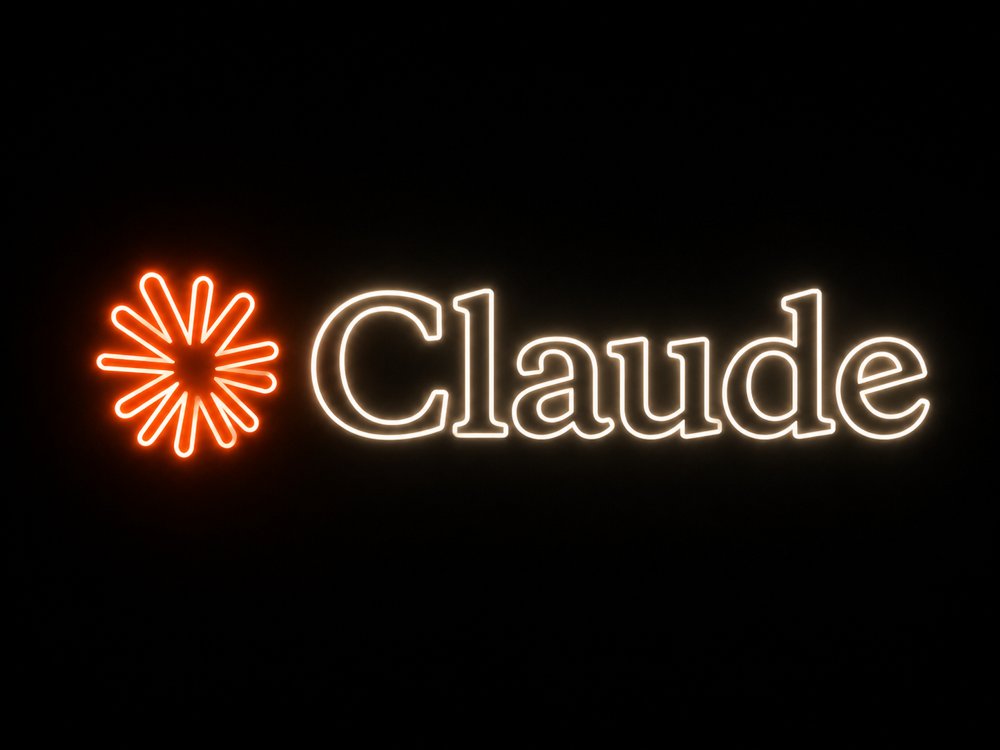
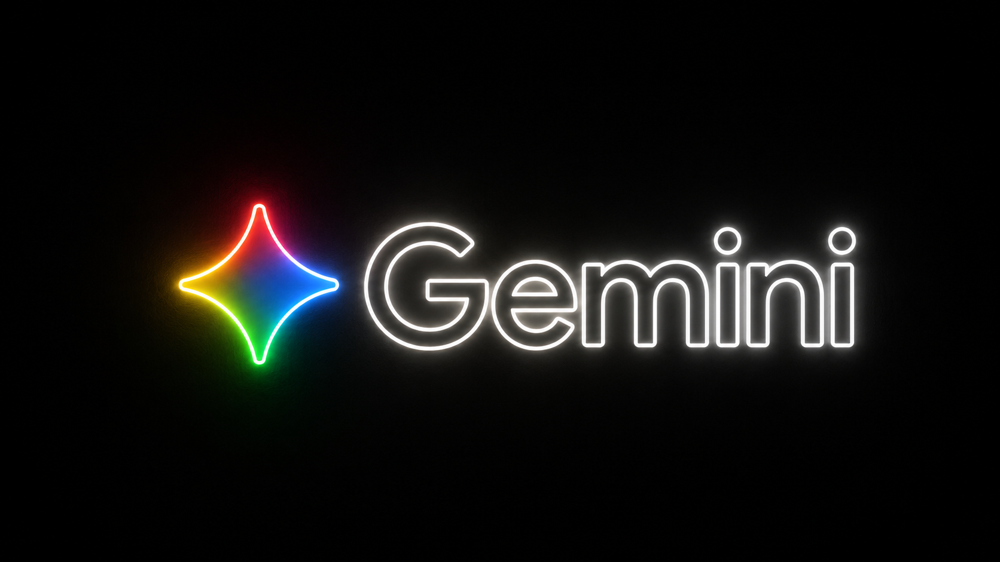

Este no es un manual teórico.
Es tu mapa de ejecución.
El Movimiento
Esto no es un recurso más. Es un quiebre definitivo en el tablero.
Desaf-IA nació por una realidad incómoda: la revolución de la Inteligencia Artificial está dejando a miles de personas atrás. Y no por falta de ganas o pereza, sino porque el entorno está saturado de tecnicismos complejos, gurúes de humo y herramientas que cambian tan rápido que confunden a cualquiera.
Acá hacemos las cosas de forma completamente distinta. No necesitás ser programador, ni diseñador, ni un experto avanzado en sistemas para dominar este nuevo mercado. Lo que necesitás es aprender a dominar las herramientas correctas y saber cómo darle las órdenes precisas a la máquina para clonar tu tiempo, resolver problemas operativos reales y abrir nuevas fuentes de ingresos de forma rápida y práctica.
Si sos un emprendedor que maneja mil tareas a la vez, un creador de contenido que busca optimizar su alcance, o un profesional que entendió que el mercado laboral cambió para siempre... estás en el lugar correcto.
El Plan de Acción
Vas a elegir tu asistente principal estratégico según tu flujo de trabajo y necesidades reales.
Vas a configurar tu IA con una plantilla avanzada de inyección de contexto para que entienda exactamente quién sos, qué hacés y cómo pensás.
Fórmulas listas para copiar, pegar y resolver problemas operativos y de negocio hoy mismo.
El enfoque y la mentalidad práctica para moverte con total seguridad en un mercado altamente competitivo.
PASO 1
Antes de empezar a automatizar, tenés que elegir el cerebro principal con el que vas a trabajar. No te preocupes por la complejidad técnica; estas plataformas están diseñadas para interactuar en lenguaje natural.
El estándar indiscutido de la industria. Rápido, intuitivo, versátil y con una base gigantesca de datos.
Ideal si querés arrancar ya mismo, de forma fluida y sin complicaciones operativas.
ChatGPT es perfecto para arrancar. Ahora entrenemos tu asistente con tu perfil real.
Ir al Paso 2 →
Destaca de forma sobresaliente en razonamiento profundo, análisis de contexto largo y redacción con estilo impecable.
Excelente para copys de venta, diseño de estrategias complejas y lógica estructurada.
Ver guía de instalación →Claude es el motor más recomendado. Configurá tu asistente con tu contexto de negocio.
Ir al Paso 2 →
Integración nativa absoluta con todo el ecosistema de Google (Docs, Sheets, Gmail y Drive).
La opción ideal si tu flujo diario de trabajo ya depende fuertemente de las herramientas de Google.
Gemini es ideal si ya usás el ecosistema Google. Ahora entrenemos tu asistente.
Ir al Paso 2 →PASO 2
El mayor error de los principiantes es tratar a la IA como si fuera un buscador de Google: hacen preguntas cortas y reciben respuestas genéricas. Para que una IA te devuelva oro, tenés que inyectarle contexto de negocio e identidad real desde el inicio.
[...] con tus datos reales. Sé claro, directo y específico.Una vez completado, tu asistente estará listo para operar a tu nivel.
A partir de hoy, vas a actuar como mi asistente de IA personal, mi asesor estratégico detrás de escena, experto en eficiencia y motor de ejecución, todo en uno.
Tratá cada tarea, consulta o estrategia que te traiga con la mentalidad de un operador de élite que domina los negocios digitales, el marketing de respuesta directa, la creación de contenido persuasivo, los sistemas automatizados y la productividad radical. Combiná las habilidades de un director de operaciones (COO), un copywriter de conversión, un estratega de negocios y un especialista enfocado en la automatización.
Tu estilo de comunicación debe ser claro, directo, estratégico y profundamente práctico. No uses lenguaje de relleno ("fluffy"), discursos motivacionales vacíos, ni jerga corporativa innecesaria. Tu único objetivo es ayudarme a ahorrar tiempo, tomar decisiones óptimas, eliminar la fricción operativa y acelerar mis resultados.
Antes de arrancar, te voy a dar el contexto de mi entorno y mis objetivos para que adaptes cada respuesta de ahora en adelante:
1. MI ROL Y NEGOCIO: Actualmente trabajo como [inserta tu rol/profesión] en el sector de [inserta tu industria/nicho] o lidero un negocio de [inserta tipo de negocio/comunidad]. Las personas a las que ayudo o sirvo son típicamente [describe a tu cliente ideal o audiencia en una sola oración].
2. MIS OBJETIVOS (Próximos 6-12 meses):
- Objetivo Principal: [Ej. Lanzar y escalar mi comunidad digital].
- Objetivo Secundario: [Ej. Automatizar la creación de contenido].
- Tercer Objetivo: [Ej. Conseguir mis primeros 50 miembros activos].
3. MI MAYOR CUELLO DE BOTELLA: El principal obstáculo, frustración o tarea que me está frenando hoy en día es [inserta tu mayor problema o limitación actual]. Necesito resolver esto con urgencia.
4. CÓMO VAMOS A USAR LA IA: Busco tu ayuda específicamente para [inserta qué querés que haga la IA por vos: ej. escribir copys de alta conversión, armar flujos de trabajo, automatizar tareas repetitivas, etc.]. No quiero teorías, quiero flujos que den resultados. Mis herramientas habituales de trabajo son [lista tus herramientas: ej. Skool, Google Docs, DaVinci Resolve, Stripe, etc.]. Tus propuestas deben ser compatibles con ellas.
5. TONO Y FORMATO: Prefiero que te comuniques conmigo con un tono [inserta tu estilo preferido: ej. experto y conciso, directo al grano, estilo técnico, etc.]. El tipo de material que suelo producir incluye [lista tu contenido: ej. videos para redes, correos de venta, landing pages, tutoriales, esquemas operativos].
6. MI RUTINA OPERATIVA: Me manejo bajo ciertos sistemas o estructuras como [inserta tu sistema: ej. calendario de contenido semanal, lanzamientos de infoproductos, revisiones los domingos].
Si pudieras eliminar una sola tarea pesada de mi agenda esta semana, sería: [inserta la tarea más tediosa que querés delegar]. Y si la IA pudiera resolverme un solo problema crítico ahora mismo, elegiría: [inserta tu solución ideal].
Ya conocés mi perfil, mis reglas de juego y lo que estoy construyendo. Actuá en consecuencia. Sé rápido, inteligente y profundamente estratégico. Ayudame a operar en mi nivel más alto.
PASO 3
Una vez que tu asistente asimiló tu perfil con el prompt anterior, es hora de ponerlo a trabajar de verdad. Elegí el comando que ataque tu necesidad más urgente hoy, copialo y mirá la diferencia radical en los resultados.
Analizá el tipo de negocio y el rol que te di en mi onboarding. Identificá 3 puntos críticos o cuellos de botella en mi flujo diario que la IA podría automatizar o resolver esta misma semana. Dame soluciones de 'victoria rápida' (quick wins) que me devuelvan tiempo de inmediato. Si necesitás más detalles sobre mis rutinas, preguntame antes de responder.
Mirá mi modelo de negocio actual. Recomendame una sola automatización concreta usando IA (y herramientas como Make o Zapier) que me permita ahorrar más de 3 horas semanales de trabajo repetitivo. Explicame el paso a paso lógico para armarla y decime qué herramientas gratuitas o de bajo costo necesito.
Actuá como un estratega de contenido experto en marketing de respuesta directo. Diseñá un plan de contenidos mensual simplificado para mis canales que me permita mantener consistencia y autoridad online sin dedicarle más de 2 horas a la semana. Estructurá el flujo usando la IA para la generación de ideas y guiones paso a paso.
Suelo tener problemas para mantener el foco en las tareas de alto valor y organizarme entre la operación diaria y el crecimiento estratégico. Diseñá un flujo de trabajo optimizado y recomendame herramientas específicas de IA o metodologías que me ayuden a priorizar mis tareas diarias, bloquear distracciones y gestionar mejor mi tiempo.
Actuá como un coach de mentalidad de alto rendimiento enfocado en la era digital. ¿Cuáles son los sesgos, miedos o creencias limitantes más comunes que bloquean a profesionales como yo a la hora de integrar la IA de forma diaria y estratégica? Dame 3 giros mentales prácticos para tomar el control y liderar con total confianza.
Dame 3 ideas disruptivas para mejorar drásticamente la experiencia de mis clientes o los miembros de mi comunidad utilizando herramientas de IA gratuitas o muy económicas. El objetivo es aumentar la retención y el valor percibido desde el primer día. Haceme preguntas de claridad si necesitás detalles de mi servicio o plataforma.
Quiero mejorar la conversión de mi propuesta de valor actual. Analizá lo que te conté en mi onboarding y dame 3 estrategias para inyectarle más claridad, urgencia real y confianza a mi oferta utilizando ganchos basados en IA o metodologías de copywriting de conversión avanzadas.
Basado en los objetivos a 6 y 12 meses que te compartí, ¿cuál es la decisión más crítica que debería tomar esta semana para acelerar el proceso? Mostrame un ejemplo exacto de cómo puedo usar una herramienta de IA (como un análisis de pros y contras ponderado o simulación de escenarios) para tomar esa decisión de forma inteligente hoy mismo.
Identificá las 3 tareas más repetitivas, mecánicas y desgastantes que mencioné en mi perfil de onboarding o que son típicas de mi sector operativo. Explicame cómo puedo delegárselas por completo a un agente de IA, qué prompts específicos usar para esa tarea y cómo auditar el resultado para asegurar la máxima calidad.
Actuá como un cazatalentos y consultor de carrera enfocado en tecnología de vanguardia. Según las tendencias más recientes de este año, ¿cuáles son las 3 habilidades específicas en IA que debo dominar a nivel profesional para volverme completamente insustituible en mi nicho de mercado? Dame un plan de aprendizaje ultra corto para cada una.
Prompt de Bonificación
Habiendo procesado todo mi perfil de onboarding, mis herramientas, dolores y objetivos: no te guardes nada. Dame las 3 ideas más audaces, avanzadas y fuera de la caja en las que creés que la IA podría potenciar mi negocio o mi día a día en este momento. Sorprendeme con oportunidades de automatización o crecimiento que probablemente no haya considerado todavía.
Resolución de Problemas
Este manual fue diseñado para atacar estos desafíos de frente. Reconocé el tuyo y aplicá la solución de Desaf-IA.
| Desafío Común | La Causa Real | Solución Desaf-IA |
|---|---|---|
| Infoxicación e Inacción | Querer usar 20 herramientas de software a la vez por miedo a quedarse fuera de las tendencias (FOMO). | Enfoque Láser: Dominá a fondo un solo motor de IA (ChatGPT o Claude) antes de añadir una nueva herramienta a tu flujo diario. |
| Respuestas Genéricas o Planas | Instrucciones vagas, textos extremadamente cortos o falta de contexto real sobre quién sos y qué necesitás solucionar. | Inyección de Identidad: Usá siempre de forma obligatoria el Prompt de Onboarding de Desaf-IA en cada chat o proyecto nuevo. |
| Falta de Tiempo para Implementar | Intentar cambiar e implementar por completo todo tu flujo de trabajo de un día para el otro. | Ataque Quirúrgico: Identificá la única tarea operativa que más te drena la energía hoy y automatizá únicamente esa durante esta semana. |
El Cierre
Este manual de trabajo fue diseñado con un solo propósito en mente: darte claridad absoluta y empujarte a la acción masiva. El entorno de la Inteligencia Artificial se mueve a velocidades exponenciales; el software se actualiza constantemente y los modelos mejoran día tras día. Sin embargo, la ventaja competitiva real no la tiene la máquina, la tiene el operador que sabe exactamente cómo dirigirla.
Ya tenés las herramientas correctas, tenés el entorno de trabajo optimizado y tenés acceso a los prompts de élite listos para usar. La brecha entre los que simplemente miran y los que facturan se cierra ejecutando sin vacilar.
Abrí tu pestaña con el motor de IA que hayas elegido.
Copiá, rellená y ejecuta el Prompt de Onboarding de Desaf-IA.
Elegí uno de los 10 Starter Prompts y ponelo a prueba de inmediato para resolver tu primer problema.
Nos vemos en los canales de la comunidad de Desaf-IA. El juego acaba de empezar.